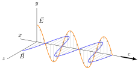

Animation of the Hadamard gate on the Bloch sphere.

Cavendish experiment setup to measure gravity.

Atom in an optical cavity.
An analog clock. Inspired by the Hamilton Khaki Field Automatic watch.

A linearly polarized electromagnetic wave.